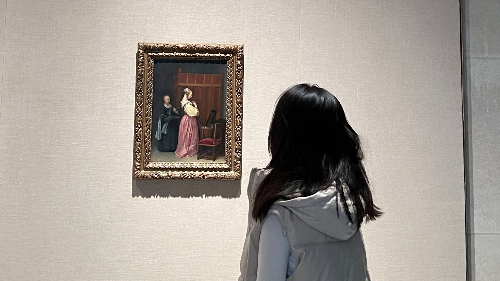
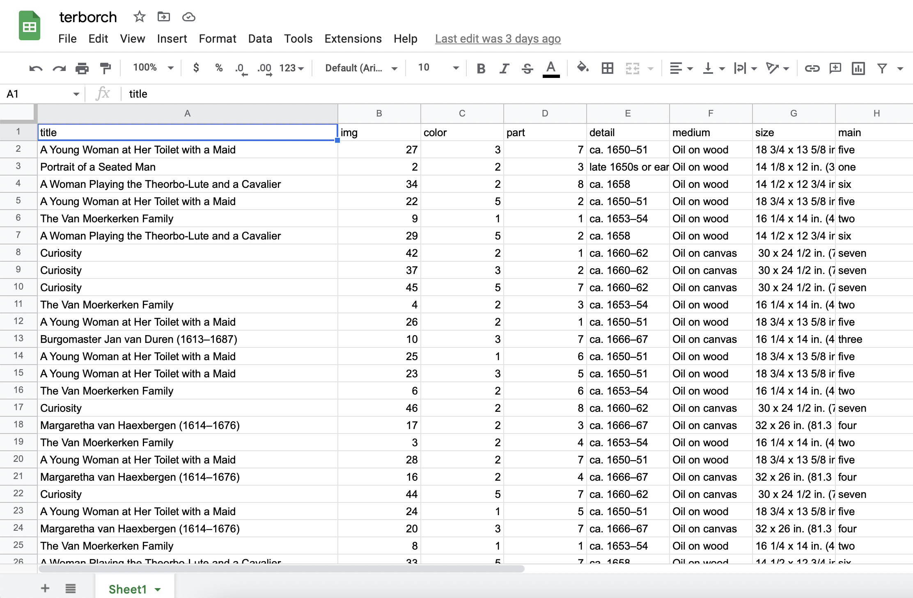
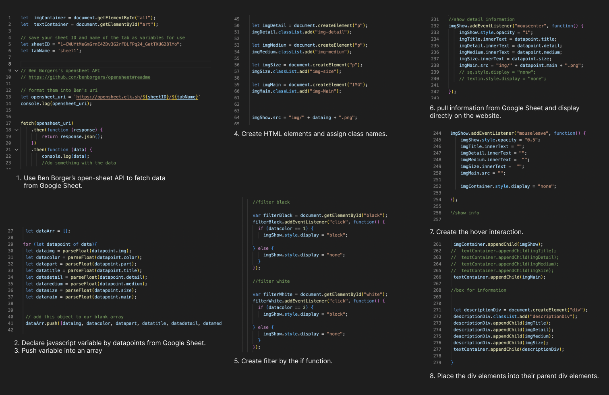

This project assists my final research paper of Gerard ter Borch the Younger. It mimics the online shopping experience of 21st century and allows users to view 17th century materials.
As a Dutch Golden age painter, ter Borch uses superb painting techniques to present different materials on his canvases.
My goal in this work is to classify clothing, objects and furniture of different materials through filters to achieve comparison in precise observation.

When I was in the exhibition, In Praise of Painting: Dutch Masterpieces at The Met. A series of works by ter Borch attracted me. As a Dutch Golden Age painter, Gerard ter Borch is proficient in creating portraits and genre paintings of introverted, quiet, dark scenes. His style lets the audience focus on the characters' expressions and costumes. Moreover, He also likes to paint objects that imply wealth, such as well-decorated furniture and gorgeous fabrics of various materials. While viewing his artwork, I recognized the lifestyle and fashion of the Dutch in the 17th century.

I used Google Sheet CMS and Javascript in this project to implement data collection as input and batch presentation as output. First, I import the artwork's information into the google sheet and then use the javascript fetch function to pull the data on the webpage. Finally, I sort the filters on the top of the webpage according to the data collected in the Google sheet.
